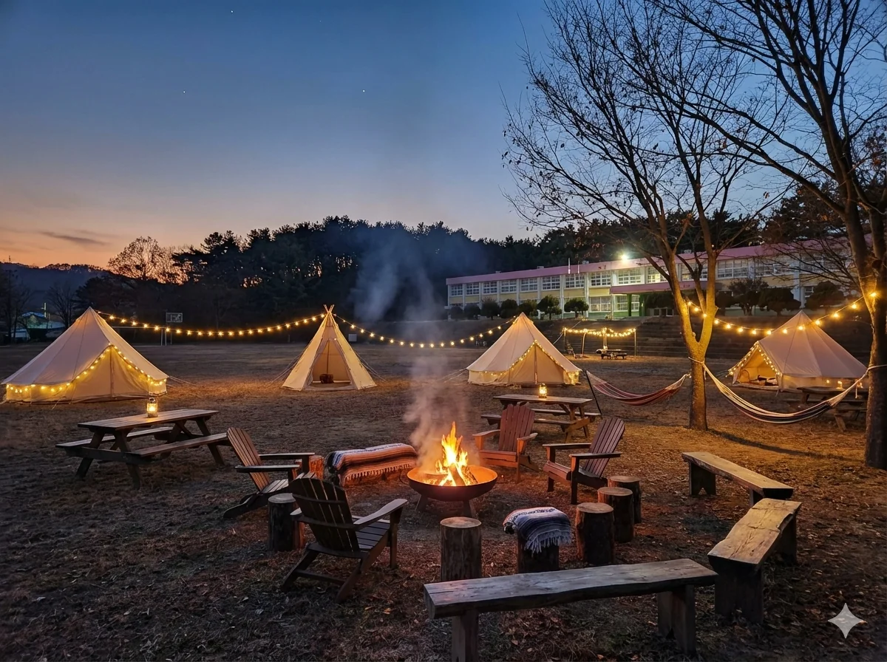
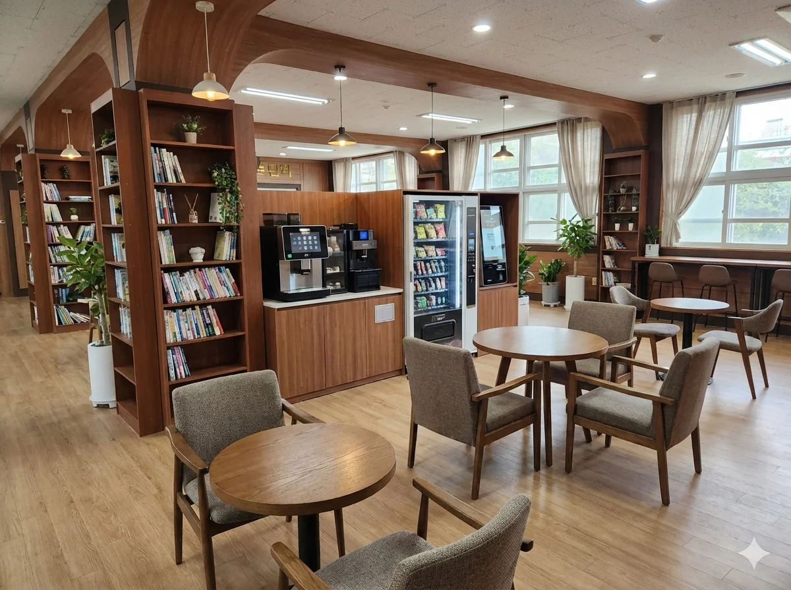
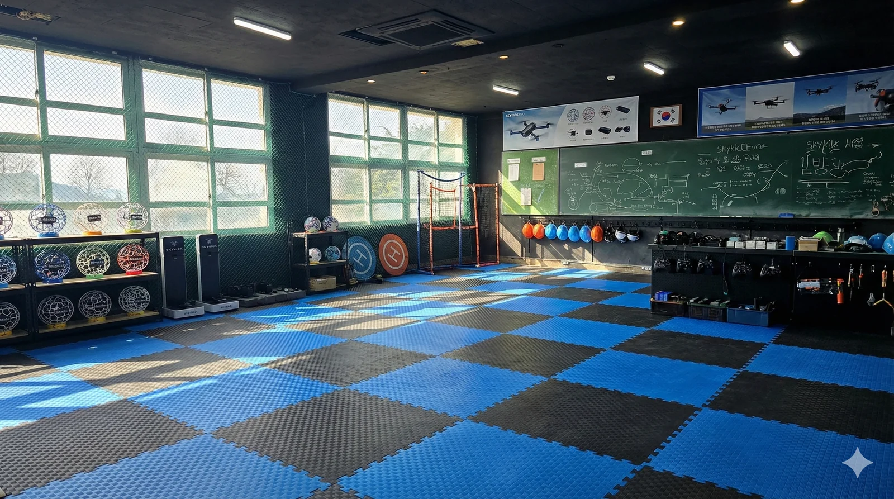

코리아파크 소개
전남 고흥군 금산면 구 금산종합고등학교 폐교를
'교육 우선' 올인원 융복합 레저·교육 플랫폼으로 재활용합니다.
💡 왜 지속 가능한가
레저만으로 운영하는 시설은 불경기에 취약합니다. 코리아파크는 드론 자격증 교육 · 외국인 근로자 교육을 수익 기반으로 두고, 캠핑·레저를 부가 수익으로 설계했습니다. 서울에서 불가능한 넓은 실외 비행 공간이 이 모델의 핵심 경쟁력입니다.



Zone A — Outdoors
캠핑·글램핑
운동장을 활용한 오토캠핑, 차박, 글램핑 사이트. 텐트 간 15m2 이상 거리 확보.

Zone B — Indoors
교육·체험·매점
1F 웰컴센터 + 특산물 매점 + 레이저사격장. 2F 드론 교육장 + VR 체험관.

Zone C — Rooftop
드론 훈련장
드론 이착륙 훈련장, 전망대, 드론 낚시 장비 대여소.